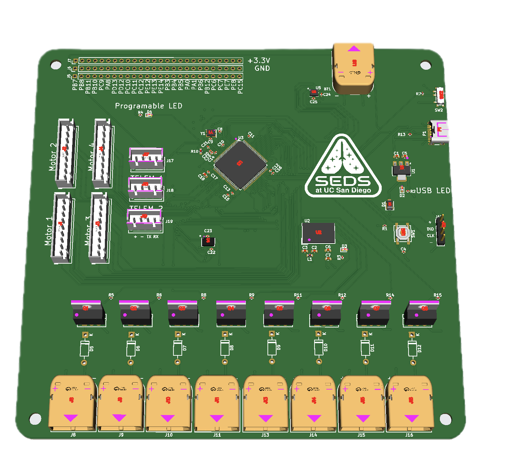
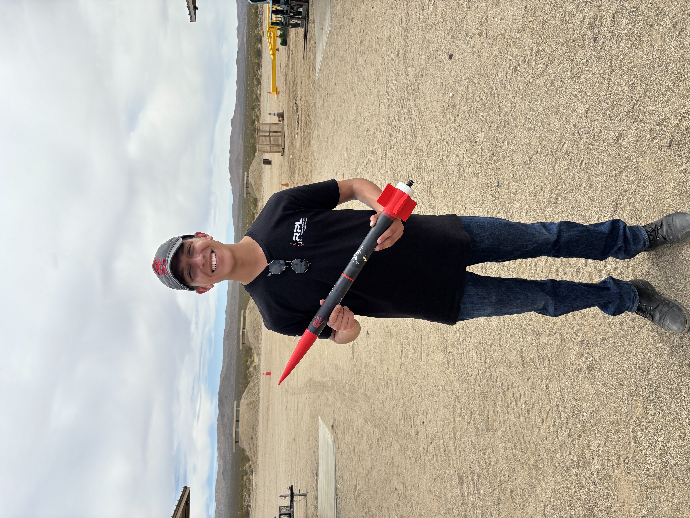
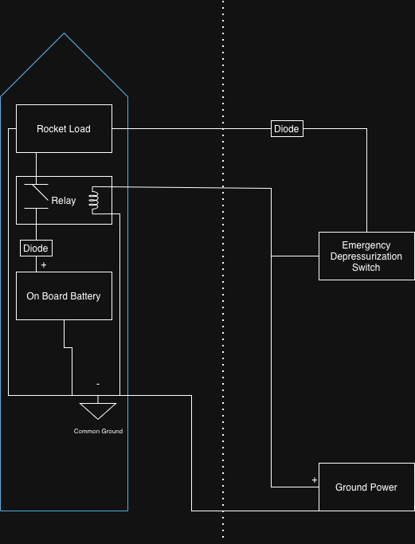

DAQ System
Custom data acquisition system for rocket engine test stands. Multi-channel sensor fusion with real-time telemetry and high-speed logging. Designed from schematic to fabricated board and deployed in field testing conditions in the Mojave Desert.
Responsibilities included sensor selection, signal conditioning circuit design, PCB layout in KiCad, embedded firmware in C, and live data visualization during test fires.

Flight Controller PCB
Custom avionics board for high-powered rocketry. Features motor drivers, dual telemetry modules, battery management, and an STM32 microcontroller in a compact, flight-ready layout. Capable of activating 8 high-voltage channels with built-in inertial measurement units.
Responsibilities included sensor selection, noise reduction circuit design, PCB layout in KiCad, and embedded firmware in C++.
Engine Test Stand
Field instrumentation and operation of a liquid-fuel rocket engine test stand. Responsible for sensor hookup, wiring harnesses, DAQ pipeline, and remote fire control during desert test campaigns. Analyzed thrust curves and combustion stability post-test.

Daedalus Rocket
Custom avionics board for a G-class rocket, featuring onboard audio beacons for recovery, altimeters, and inertial measurement units. Analyzed airframe stability, structural loads, and simulated flight performance.

VESPER Rocket Rapid Emergency Depressurization System
Designed and built a custom power-switching circuit for the VESPER rocket that transitions from ground station power to onboard battery power without resetting the system. The circuit also includes a kill switch that cuts power and triggers rapid vehicle depressurization, serving as a critical safety system during testing.